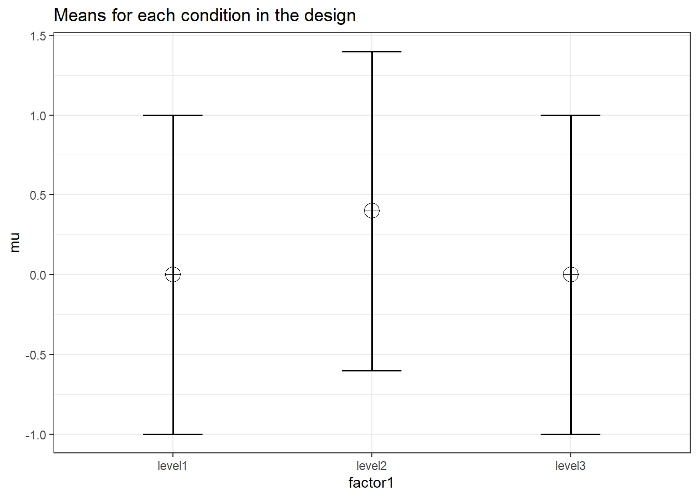
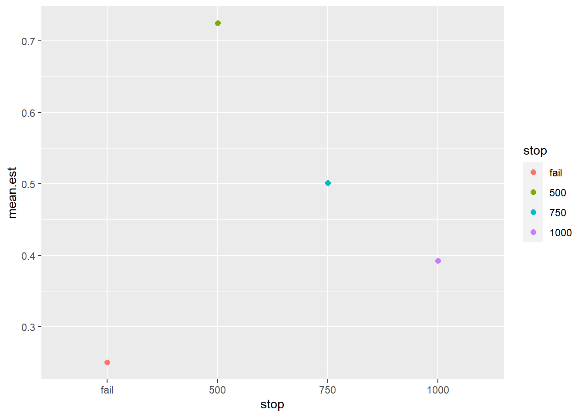

Chapter 15 Beyond Superpower II: Custom Simulations
Sometimes it may be better just to simulate your planned study. If your study has peculiar features that current software does not support custom simulation may be your only possible solution. This approach is flexible and you can customize it as much as you are willing to code. The downside is that the process will be more time consuming and it is possible to introduce errors in your code.
In this chapter, we will provide a few vignettes on how to implement simulation-based power analyses for a variety of outcomes and designs. Overall, all you need for these simulations is an accurate data generating process and the ability to repeat that process many times (preferably a few thousand iterations). This is the same process that Superpower performs under-the-hood when you are running simulations with ANOVA_power. The ability to write your own simulations and data generating mechanisms is a powerful tool that allows you to test your analyses, and assumptions about those analyses, prior to any data being collected.
15.1 A Clincal Trial with a Binary Outcome
This section was inspired by a Twitter thread from Andrew Althouse, a PhD statistician currently at the University of Pittsburgh Medical School, on creating a simulation of Randomized Clinical/Control Trial (RCT) data. We wanted to expand on his suggestions and provide some of my own recommendations. In Andrew’s thread he explicitly used base R and only default stats functions that are native to R. While these are great tools, they are limited and most researchers wanting to simulate a study will find these tools lacking when trying to simulate their own particular study. This is not a criticism of Dr. Althouse’s thread, it is a wonderful thread. However, in this section we will use a mostly “tidy” approach for generating the data.
In this section we will use simstudy as a way to pseudo-replicate the results from Dr. Althouse. This will serve as a simple introduce to simulating experimental designs and how this can be utilized for power analysis purposes. All the code here will be “functional” which means we will define new functions that will generate the data. This way you can run multiple variations on your simulation with only a few more lines of code (rather than copy and pasting the whole simulation again and again).
R Packages
For this simulation I will try to restrict my use of packages to as few as possible. To simulate the data again I will need the simstudy package and I will also tidyverse set of packages to make the code “tidy.” In addition, I will need the
library(simstudy)
library(tidyverse)
library(data.table)15.1.1 Proposed Study and Approach
According to Dr. Althouse’s documentation he was trying to simulate the following study:
- This code will mimic a 2-group parallel-arm randomized trial using 1:1 allocation of patients to treatment 1 versus treatment 2
- For this example, we will use a binary outcome of “death”
- Patients receiving treatment 1 will have a 40% probability of death
- Patients receiving treatment 2 will have a 30% probability of death
- Analysis will be performed using a logistic regression model
- We will run 100 simulated RCT’s and report the odds ratio, 95% confidence interval, and p-value for each simulated trial
- The “true” treatment effect for a treatment that reduces probability of outcome from 40% to 30% is about OR = 0.642
- The power of a trial with N=1000 patients and exactly 1:1 allocation under these assumptions is about 91-92%
Some people reading this may already feel a tad overwhelmed. But trust me, everyone has to start somewhere and all the authors of this book were in your shoes not too long ago! Also, this is a fairly straightforward process. The process is only made easier when you use the many tools available in R. We are going to create “functions” which essentially means if I want to run the same simulation again (but maybe change 1 or 2 parameters) this can be done with only a few lines of code. This is efficient and if you are serious about writing your own simulations I would highly recommend writing your own functions for the simulation.
15.1.2 Step 1: Create a Data Generating Function
This is part looks more complex than it is. All we are doing is making a function that I will call gen_bidat (short for “generate binomial data”). One of the things Althouse mentions in his code is that his allocation in the simulation is inappropriate. We can get around that by incorporating the functions from simstudy (which randomly assigns group) and keeps things organized through the %>% (known as a “pipe”) function. We also will import the data.table package because the simstudy package generates data in a data.table format.
# Define function
# Parameters
## N = sample size
## props = proportions in each group (length is equal to number of groups)
gen_bidat = function(props,N){
# Create data with N participants and balanced assignment to treatment group
df = genData(N) %>% # generate data with N participants
trtAssign(n = length(props),
balanced = TRUE,
grpName = "trt") # Randomly assign treatment (tr) in a balanced fashion
# Get the number of gropus by the number or proportions entered
grps = length(props)
# generate condition for each group
# This creates a conditional output
# I.e., the odds of the outcome is determined by treatment group
for(i in 1:grps){ # run loop once for each group in the study
grp = i-1 # the simulation runs from 1 to the total number of groups
# the i-1 starts the loop at zero
# We then assign the group (grp) by which number in the loop we are in
con_run = paste0("trt == ", grp)
# We then grab the assign the correct proportion to the groups in order
# We have to create the object dc first (i == 1)
# All iterations of the loop add to dc rather than creating a new dc
if (i == 1) {
dc = defCondition(
condition = con_run,
formula = props[i],
dist = "binary",
link = "identity"
)
} else{
dc = defCondition(
dc,
condition = con_run,
formula = props[i],
dist = "binary",
link = "identity"
)
}
}
# Now we generate the outcome based on the group (condition)
dat <- addCondition(condDefs = dc,
dtOld = df,
newvar = "y")
return(dat)
}
# Test run
gen_bidat(c(.2,.35),N=10)## id y trt
## 1: 1 0 0
## 2: 2 0 1
## 3: 3 0 1
## 4: 4 0 0
## 5: 5 1 0
## 6: 6 0 0
## 7: 7 1 1
## 8: 8 0 1
## 9: 9 1 0
## 10: 10 0 1In some cases the function above is enough. We may just want to generate a data set reflective of study we have designed. We can then “play” with the data set to plan analyses for future study. However, that is not what we are after today and we will move onto the power analysis.
15.1.3 Step 2: Simulation
Now we can get to the fun part and run a simulation. All this means is that we run the simulated data (above) for a number of iterations or repetitions (typically for thousands of iterations). We can make it a power analysis by counting the number of positive results (e.g., below the significance threshold).
For the power analysis we created a pwr_bidat function that performs a power analysis with a certain number of repetitions (reps argument). Notice below that we are using the function we just created (gen_bidat) within the pwr_bidat function. That is why the user must supply the same information as the last function (the proportions, props, and the sample size, N). In addition, there are two arguments needed for the power analysis: alpha and conf.level. The alpha argument sets the alpha-level for the analyses (i.e., the significance cutoff). While the conf.level argument sets the confidence level (e.g., 95%) for the confidence intervals for the power analysis. We can calculate confidence intervals for a simulation because we have a number of “successes” over a number of attempts (total number of reps). We can use the prop.test function which provides confidence intervals for proportions. This is helpful when for when we are running a small number of simulations and want an idea of what estimates of power are reasonable.
pwr_bidat = function(props,N,
reps=100,
alpha=.05,
conf.level = .95){
# Create 1 to reps simulated data sets
sims = replicate(n = reps,
gen_bidat(props, N = N),
simplify = FALSE)
# Run an equivalent number of analyses
sims2 = purrr::map(sims, ~ glm(y ~ trt,
data = .x,
family = binomial(link = "logit")))
# Get the summary coefficients from our models
sims3 = purrr::map(sims2, ~ summary(.x)$coefficients)
# Put all the results into a data frame (tibble)
sims4 = purrr::map(sims3,
~ tibble::rownames_to_column(as.data.frame(.x),
"coef"))
# Combine all the data frames into one
simsdf = bind_rows(sims4, .id = "nrep")
# Summarize results by coefficient
simspow = simsdf %>%
group_by(coef) %>%
# Calculate the power (number of results with p-value < alpha)
summarize(
estimate = mean(Estimate),
power = mean(`Pr(>|z|)` < alpha),
# Calculate confidence intervals
power.lci = prop.test(sum(`Pr(>|z|)` < alpha), reps)$conf.int[1],
power.uci = prop.test(sum(`Pr(>|z|)` < alpha), reps)$conf.int[2],
.groups = 'drop'
)
# Return table of results
return(simspow)
}
set.seed(01292020)
pwr_res = pwr_bidat(c(.4,.3),N=1000)Now that we have the results we can create a table as output using the kable function.
# Create pretty table to print results
knitr::kable(pwr_res %>%
rename(Coefficients = coef,
`Average Log Odds` = estimate,
Power = power,
`Lower C.I.` = power.lci,
`Upper C.I.` = power.uci),
digits = 2,
caption = "Result from Power Simulation")| Coefficients | Average Log Odds | Power | Lower C.I. | Upper C.I. |
|---|---|---|---|---|
| (Intercept) | -0.43 | 1.0 | 0.95 | 1.00 |
| trt | -0.43 | 0.9 | 0.82 | 0.95 |
Based on these results we can can conclude that a study of 1000 patients randomly assigned to one of two treatment groups wherein 30% of participants die in treatment group #1 and 40% perish in treatment group #2 will have approximately 95% power [0.82,0.95]. Notice, that compared to Dr. Althouse’s thread, we estimated the power at 95% (thread noted power at ~92.3%). This is to be expected when simulating data and is why a high number of repetitions are needed to get an accurate estimate of power.
15.1.4 Why more complicated code?
Well, here is why we create functions: it is easier on yourself in the future. Say, we run three separate simulations with minor differences so I go about with the Althouse approach (maybe even copy and paste the code a few times). Later, I notice a flaw in my code, or maybe there is a small change that alters all three simulations. Well, if I take the time to create the customized functions then all I have to do is change the code in one place (where I defined the function) rather than with every chunk of code that includes the simulation code.
Also, it is easier to produce variations on the same design. Let’s imagine we are doing a study on a treatment for an infectious disease that has a hospitalization rate of at least 3.5% people that get infected (so treatment occurs immediately upon diagnosis and only the most severe are hospitalized). The study investigators want to know if 2000 patients are enough to detect if the proposed treatment reduces the hospitalization rate at least by half (1.75%).
All I have to do is use the same function I have created above but change the arguments in the function.
pwr_2 = pwr_bidat(c(.035,.0175),N=2000)
knitr::kable(pwr_2,
caption = "Another Study of Binary Outcomes")| coef | estimate | power | power.lci | power.uci |
|---|---|---|---|---|
| (Intercept) | -3.3449342 | 1.00 | 0.9538987 | 1.0000000 |
| trt | -0.6826144 | 0.68 | 0.5782080 | 0.7677615 |
Now, we have the new results in only 4 lines of code! Based on those results we would likely advise the investigators that they will need a larger sample size to conclude effectiveness for their proposed treatment.
15.1.5 Conclusions on the Binary RCT Analysis
In this section we have demonstrated how to create 2 R functions that 1) generate data and 2) generate a simulation based power analysis. Simulation is not necessary for a simple analysis such as this where analytic solutions exist in programs like GPower or Superpower. However, as we will detail in the next sections, simulation becomes very useful when the design becomes complicated (or when we want to violate the assumptions of the models we use).
15.2 Binary RCT with a Interim Analysis
Now we can move onto a more complicated, but very useful, RCT design that involves analyzing the data at multiple sample sizes. The process of looking at the data early (i.e., before the full sample size is collected) is called a “interim” analysis, but is sometimes called a “sequential” analysis as well (Daniël Lakens 2014; Daniel Lakens, Pahlke, and Wassmer 2021). Regardless of what the process is called the goal is the same: more efficient study designs. There is an obvious advantage of including interim analyses is the ability to stop a study early. Therefore the sample size is lower and you can save resources. Why don’t we do this for every study? Well, adjusting for the multiple looks at the data can be difficult, and if we do not adjust for the multiple possible stopping points the Type I error rate will be inflated (e.g., an alpha of 0.05 can be inflated to ~0.35 with unlimited looks at the data).
15.2.1 Proposed Study and Approach
The approach mostly remains the same as the previous example but we have to account for a interim analysis.
- This code will mimic a 2-group parallel-arm randomized trial using 1:1 allocation of patients to treatment 1 versus treatment 2 with a maximum sample size of 1000 patients.
- For this example, we will use a binary outcome of “death”
- Patients receiving treatment 1 will have a 40% probability of death
- Patients receiving treatment 2 will have a 30% probability of death
- Analysis will be performed using a logistic regression model
- We will run 100 simulated RCT’s and report the odds ratio, 95% confidence interval, and p-value for each simulated trial
- The “true” treatment effect for a treatment that reduces probability of outcome from 40% to 30% is about OR = 0.642
- There will be a total of 3 analyses at 50%, 75%, and 100% of the sample size.
- The alpha level will be adjusted with a O’Brien-Fleming correction (alpha spending function).
Now, for this simulation we will need 1 more R package: `rpact`. This is a very useful package if you are interested in sequential analyses.
To properly plan the study we have to define the number of looks at the data (nLooks), when these analyses would be scheduled as proportion of the total sample size (analyses_scheduled), and we can create an empty vector for the what the adjusted alpha should be (efficacy_thresholds).
library(rpact)
# here is where you put the maximum number of analyses
nLooks <- 3
# Here is where you list the information fraction (% of total N)
## (e.g. here 50%, 75% and 100% information)
analyses_scheduled <- (c(0.50, 0.75, 1))
efficacy_thresholds <- numeric(nLooks)Now, we setup the analysis procedure using the getDesignGroupSequential function from rpact. Notice that we set the if the hypothesis test is one or two sided (sided = 2 for a two sided hypothesis in this case), and the overall alpha level is set with alpha argument. We then supply when the analyses will take place with the informationRates argument, and the type of correction to the alpha level for each interim analysis is set with typeofDesign. Since we want a O’Brien-Fleming correction we set it to typeOfDesign = "asOF".
Once the design is created we can extract it with a simple for loop for the number of analyses to extract the alpha level for each interim analysis.
# Set up design in rpact
design <- getDesignGroupSequential(sided = 2,
alpha = 0.05,
informationRates = analyses_scheduled,
typeOfDesign = "asOF")
for(j in 1:nLooks){
efficacy_thresholds[j] = design$stageLevels[j]
}Now we can create our own function again. We’ll call it pwr_bidat2. Essentially this does the same thing as the function in the last example. However, it takes three looks at the data when there are 500, 750, and 1000 patients. So a for loop will split up the sample and add interim analyses at these points. The loop will stop for each repetition of the simulation when either the observed p-value is less than the corrected alpha or when the total sample size is reached. Those results are then counted and save in the res_tab portion of the function’s output.
pwr_bidat2 = function(props, N,
interim_n = c(500,750,1000),
reps = 100,
alpha = efficacy_thresholds,
conf.level = .95){
#Create empty data frame for the results of each repetition
res = data.frame(N = rep(NA,reps),
alpha = rep(NA,reps),
success = rep(NA,reps),
stop = rep(NA,reps),
p.value = rep(NA,reps),
estimate = rep(NA,reps))
# For loop for each repitition of the simulation
for(i in 1:reps){
# Generate full data set
dat = gen_bidat(props, N = N)
# Set logical indicator for stopping the trial
stop_trial = FALSE
# Run loop for each potential stopping point
for(j in 1:length(interim_n)){
# Set current N and alpha level
val = interim_n[j]
alpha_j = alpha[j]
# Only continue analysis if stopping criteria not met
if(stop_trial != TRUE){
# Get interim data points
dat_i = dat[1:val,]
# Build model
mod_i = glm(y ~ trt,
data = dat_i,
family = binomial(link = "logit"))
# Get results from the model
sum_i = summary(mod_i)$coefficients[2,]
# Determine if the trial can stop
if(sum_i[4] < alpha_j){
stop_trial = TRUE
alpha_f = alpha_j
n_f = val
}
}
}
# Get final alpha and N if no "success" at final N
if(stop_trial == FALSE){
n_f = val
alpha_f = alpha_j
}
# Store results from this repetition
res$N[i] = n_f
res$alpha[i] = alpha_f
res$success[i] = stop_trial
res$stop[i] = ifelse(stop_trial,n_f,"fail")
res$p.value[i] = sum_i[4]
res$estimate[i] = sum_i[1]
}
# Create summary of results
simspow = res %>%
summarize(
med_est = median(estimate),
power = mean(p.value < alpha),
# Calculate confidence intervals
power.lci = prop.test(sum(p.value < alpha), reps)$conf.int[1],
power.uci = prop.test(sum(p.value < alpha), reps)$conf.int[2]
)
stoppow = res %>%
group_by(stop) %>%
summarize(
prop = n()/reps,
prop.lci = prop.test(n(), reps)$conf.int[1],
prop.uci = prop.test(n(), reps)$conf.int[2],
mean.est = mean(estimate),
.groups = 'drop'
)
return(list(sims = res,
power_tab = simspow,
stop_tab = stoppow))
}Now, we can actually perform the simulation and with the same parameters from the last example.
set.seed(20210324)
test = pwr_bidat2(props = c(.3,.4),
N = 1000)
knitr::kable(test$power_tab,
caption = "Power for Interim Analysis Design")| med_est | power | power.lci | power.uci |
|---|---|---|---|
| 0.4617294 | 0.85 | 0.7614692 | 0.9108509 |
As we can see from the summary table above, the overall statistical power is slightly reduced (at least with 100 simulations). Below, we can plot the proportion of results that are below the corrected alpha level at 1000, 750, and 500 patients (as well as the proportion where there was a failure to find a significant result).
test$stop_tab %>%
mutate(stop = factor(stop,
levels = c("fail", "500","750","1000"))) %>%
ggplot(aes(x = stop, color = stop, y = prop)) +
geom_point(size=2) +
geom_errorbar(aes(ymin = prop.lci,
ymax = prop.uci)) +
coord_flip()
So how often can we expect the trial to end early? Well, according to this simulation we can expect the trial, under these conditions and stopping criteria, to end at N = 500 approximately 30% of the time and N = 750 about 35% of the time. So we have a very high chance of being able to save resources by using interim analyses. Note, that the confidence intervals are awfully wide from these simulations so we want to be re-run the simulation with a higher number of repetitions.
Another thing to point out is the effect size estimate. We can also plot the effect of treatment at every possible stopping point of the study.
test$stop_tab %>%
mutate(stop = factor(stop,
levels = c("fail", "500","750","1000"))) %>%
ggplot(aes(x = stop, color = stop, y = mean.est)) +
geom_point(size = 2) 
We can see that the effect size estimate, log-odds, are inflated when the study is stopped early (roughly double the average effect size at N=500). This is one of the disadvantages of early stopping: inflated effect size estimates. What is the reason for this peculiar pattern? In order to obtain a significant result at an early stopping point the observed effect size must be quite large. Therefore, interim analyses are selecting for very large effect sizes in order to stop the study early.
15.3 Conclusion on a Binary RCT with Interim Analyses
As we have documented, planning for interim analyses can be implemented with a few modifications to our existing code from the previous example. For this example we switched to a for loop to make it easier to perform the interim analyses and record the stopping point (and the relevant statistics at the stopping point). The appropriate stopping criteria (i.e., the adjusted alpha level) can be obtained from specialized R packages like rpact.